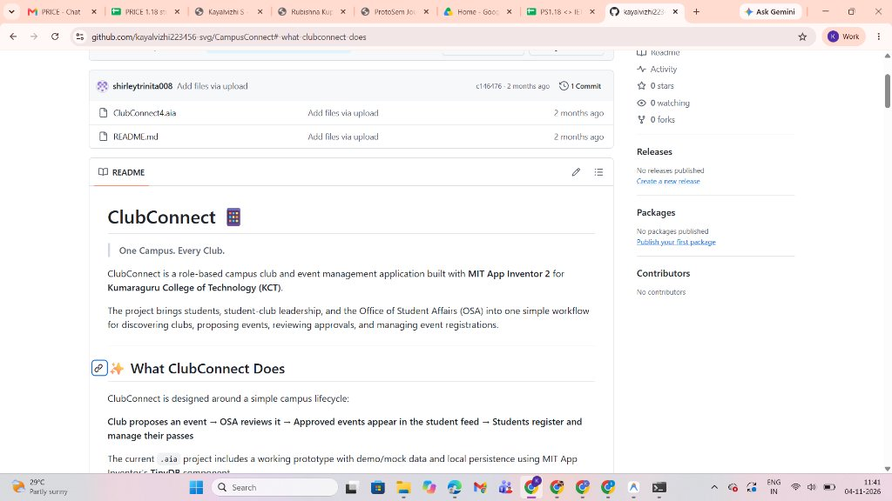

ClubConnect 📱
One Campus. Every Club.
Built with MIT App Inventor 2 • Kumaraguru College of Technology (KCT)
Project Overview
ClubConnect is a role-based campus club and event management application developed using MIT App Inventor 2 for Kumaraguru College of Technology (KCT).
The application provides a unified platform for students, club coordinators, and the Office of Student Affairs (OSA) to discover clubs, submit proposals, track approvals, and manage registrations seamlessly.
Problem Statement
Managing multiple college clubs and events through scattered communication channels leads to information silos, manual delays, and loss of visibility across event approvals and student registrations.
ClubConnect tackles these bottlenecks by consolidating the entire campus club ecosystem into one intuitive, role-based mobile application.
Project Objectives
Club Discovery
Provide a centralized directory for students to explore, discover, and learn about every active campus club.
Event Proposals
Empower club representatives to submit structured digital event proposals directly to administration.
OSA Approvals
Streamline administrative event review, feedback, and formal approval by the Office of Student Affairs.
Student Feed
Publish approved events automatically into an interactive campus feed for student registration.
Pass & Registration Management
Provide students with organized digital event registration and verifiable entry passes, eliminating paper queues.
Application Lifecycle Flow
The entire event coordination cycle is modeled end-to-end across multiple stakeholder permissions:
Club Proposes
Club rep submits event proposal
OSA Reviews
Administration evaluates details
Event Approved
Formal clearance granted
Student Feed
Published to campus feed
Registration
Students register with 1-click
Passes
Access verifiable digital pass
Key Application Features
1. Club Discovery
Students can browse active clubs, leadership details, and domains across engineering, arts, and sports.
2. Event Proposal
Authorized club coordinators submit proposal drafts with date, venue, budget, and agenda.
3. Event Approval
OSA leadership reviews submissions with status flags (Approved, Pending, or Revision Requested).
4. Student Event Feed
Approved events display dynamically in the feed with posters, schedules, and eligibility requirements.
5. Event Registration
Students quickly register for workshops, competitions, and seminars directly within the app.
6. Pass & Role-Based Access
Unique workflows tailored for students, coordinators, and OSA with persistent digital entry passes.
Technology Stack
| Component | Technology / Detail | Role in Architecture |
|---|---|---|
| Application Development | MIT App Inventor 2 | Visual block programming for rapid Android prototyping |
| Project File | ClubConnect4.aia | Complete App Inventor source architecture and screen assets |
| Local Data Storage | TinyDB | Local persistent key-value store for user sessions, passes, and events |
| Application Type | Mobile Application (.apk / .aia) | Android mobile client designed for student and faculty devices |
| Development Approach | Role-Based Access Architecture | Custom UI permissions for Students, Club Coordinators, and OSA |
Project Implementation & GitHub
The project is implemented as a working mobile prototype using MIT App Inventor 2. It includes simulated demonstration datasets, responsive screen layouts, and local data persistence via the TinyDB component.
The prototype demonstrates end-to-end functionality: discovering campus clubs, proposing new events, administrative review and approval, and issuing student registration passes.

CampusConnect / ClubConnect (.aia Project)
Expected Outcome
ClubConnect transforms campus life by making club and event management transparent, accessible, and fast. It bridges students, club organizers, and OSA administration within one platform, eliminating paperwork and communication silos.
Conclusion
ClubConnect provides a scalable blueprint for digital campus administration. By using role-based routing and localized persistence, it lays the foundation for unified event ecosystems across higher educational institutions.
Developed for: Kumaraguru College of Technology (KCT) • Platform: MIT App Inventor 2 • Storage: TinyDB (.aia)